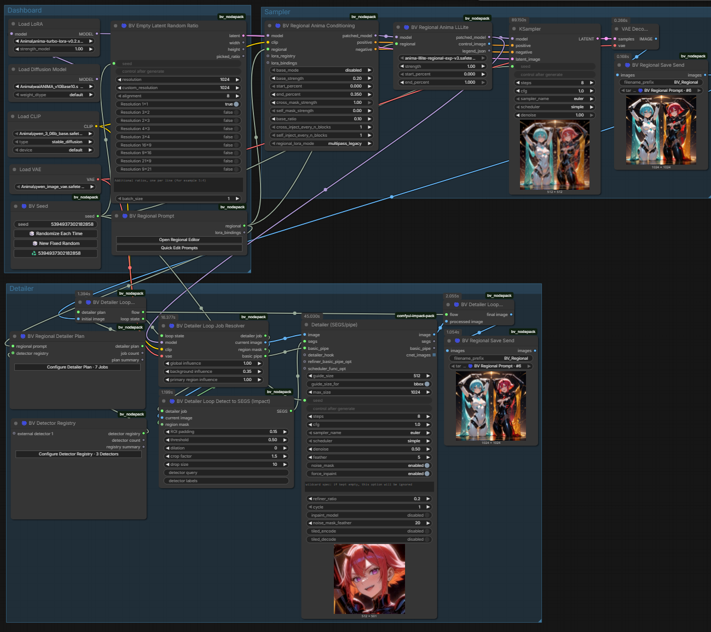

Regional workspace
Display · standalone editor or help landing page
30 px / 1.15 · 650UI component showcase
Persistent visual reference for BV colors, controls, states, responsive behavior, and interaction patterns. Use this page when implementing or reviewing BV interfaces.
#121116#1E1C24#2A2732#17161B#8D70FF#667DFF#52AEE3#F2EEF8#A8A1B3#55C994#E9B65F#EE6F83Regional workspace
Display · standalone editor or help landing page
30 px / 1.15 · 650Heading 1 · window and page title
23 px / 1.2 · 650Heading 2 · primary section
18 px / 1.3 · 600Heading 3 · subsection, card, or grouped controls
15 px / 1.35 · 600Use the regional editor to assign prompts, masks, and detector jobs to individual image areas. Mixed prompt styles remain unchanged.
Body · descriptions, documentation, and regular content
14 px / 1.55 · 400Output image width
Label · fields, compact controls, and table headers
12 px / 1.4 · 500Last updated by Sender 2 · 1024 × 1024
Caption · metadata, helper text, and secondary status
11 px / 1.45 · 400BV_REGIONAL / detector_registry.json
Code · paths, identifiers, values, and technical content
12 px / 1.5 · 400Inline emphasis remains restrained, italic emphasis is reserved for prose, and links use the spiral tint without becoming visually louder than surrounding controls.
Valid configurationReview requiredInvalid JSONOptional metadata
Use BV_REGIONAL as the document type and keep region_id stable during serialization.
{ "region_id": "subject-primary", "prompt": "portrait, cinematic rim light", "usage": "generation"}The canvas remains the primary workspace. Supporting windows should add context without hiding it.
| Component | Purpose | State | Items |
|---|---|---|---|
| Regional Editor | Assign prompts and masks to image regions | Ready | 12 |
| Detector Registry | Manage reusable detector definitions | Review | 3 |
| Detailer Plan | Configure ordered refinement jobs | Draft | 7 |
| Key | Type | Default | Range |
|---|---|---|---|
threshold | float | 0.50 | 0–1 |
guide_size | integer | 512 | 64–2048 px |
region_id | string | required | — |
enabled | boolean | true | — |
BV_REGIONALRegional workflows remain understandable when structure and editing context stay visible.
Use regular body text for explanations that require more than a compact helper label. Consecutive paragraphs receive consistent spacing without forcing every author to add layout classes.
Keep one semantic idea per paragraph. This makes embedded help content easier to scan inside narrow floating windows.
Small text is reserved for supporting notes, limitations, and secondary context.
Highlighted text draws temporary attention without representing a warning.
Legacy regional mode communicates removed or replaced terminology.
Press Ctrl+Shift+P to open the quick prompt editor.
BV abbreviations retain their explanation through the native tooltip.
BV Regional Anima Conditioning · Extremely long workflow component name
A longer help description may use at most two visible lines before it is shortened. The full content should remain available through expansion or a dedicated help surface.
models/detectors/ultralytics/segmentation/very_long_detector_file_name_v2.4.safetensors
Content before a neutral divider
Content between grouped sections
Content after a labeled divider
Use for primary content groups when the surrounding window already provides a clear surface.
Reserved for temporary focus, important summaries, or content above the regular hierarchy.
A parent section may contain quiet inset groups without adding another full card hierarchy.
Edit regions, prompts, masks, and workflow assignments.
Subject primary · P0
The drag affordance is visual only until the docking/layout research.
Draw a region on the image to create the first entry.
Try a broader search or clear the active filters.
Use inside an already defined section when another border would add noise.
A clear boundary for selectable or independently meaningful content.
Reserved for content that visually sits above its surrounding surface.
Expanded content follows the same spacing and typography as a regular section body.
Collapsed groups keep complex forms scannable without hiding validation state.
General settings are currently visible. Opening another item closes this one automatically.
Canvas settings keep the ComfyUI workspace sharp and interactive.
Performance settings can disable blur, animation, and other decorative effects.
Hover or focus the first icon. The second tooltip remains visible as a positioning reference.
Toasts float above BV content but never blur or block the ComfyUI canvas.
The regional document was stored successfully.
One assignment needs review.
Sender 2 supplied a newer image.
Usage: Success and informational messages may disappear automatically. Warnings with unresolved actions remain until dismissed. Errors that block work belong in a persistent callout or dialog instead.
The palette is modal, searchable, and optimized for short keyboard interactions.
Useful for optional detail that belongs to a specific field or control.
P0 is evaluated before P1, but lower numeric priority is painted last and therefore appears on top.
Read full article →Shown sparingly when introducing an unfamiliar feature for the first time.
Save frequently used mask and detector combinations, then apply them from the toolbar.
Right-click the stage or use the keyboard button. The menu is positioned at the invocation point and remains inside the viewport.
For destructive or irreversible decisions that require an explicit answer.
For focused configuration that temporarily owns the interaction.
Context remains visible and the underlying workspace stays interactive.
May dim and block interaction, but never blurs the ComfyUI canvas.
ModelessNever adds a backdrop and never blocks the canvas.

This floating window never applies blur or a blocking overlay to the ComfyUI canvas.
Only the owning BV window content may blur. The workflow canvas remains sharp and clickable.
Drag only by the handle. Expand, edit, and reorder with the keyboard without triggering accidental dragging.